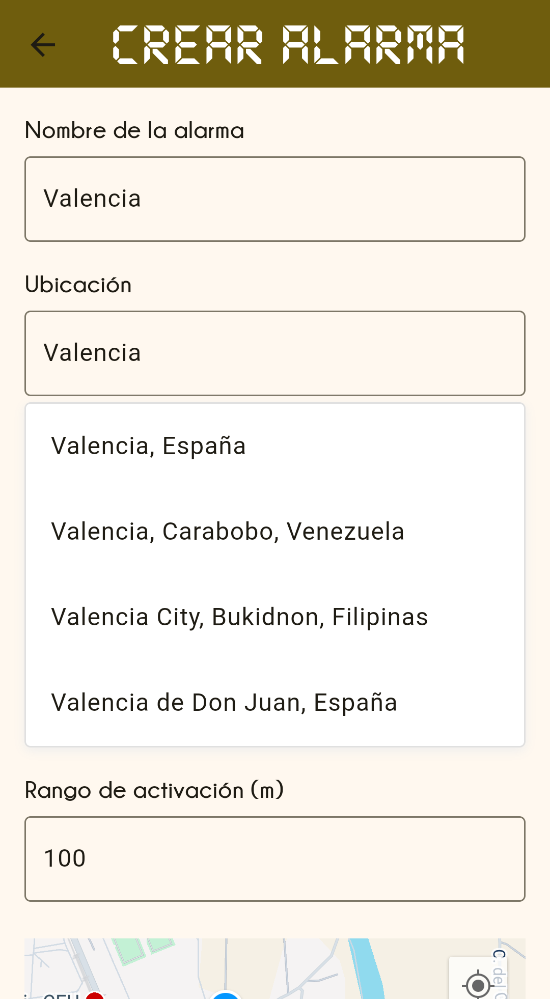
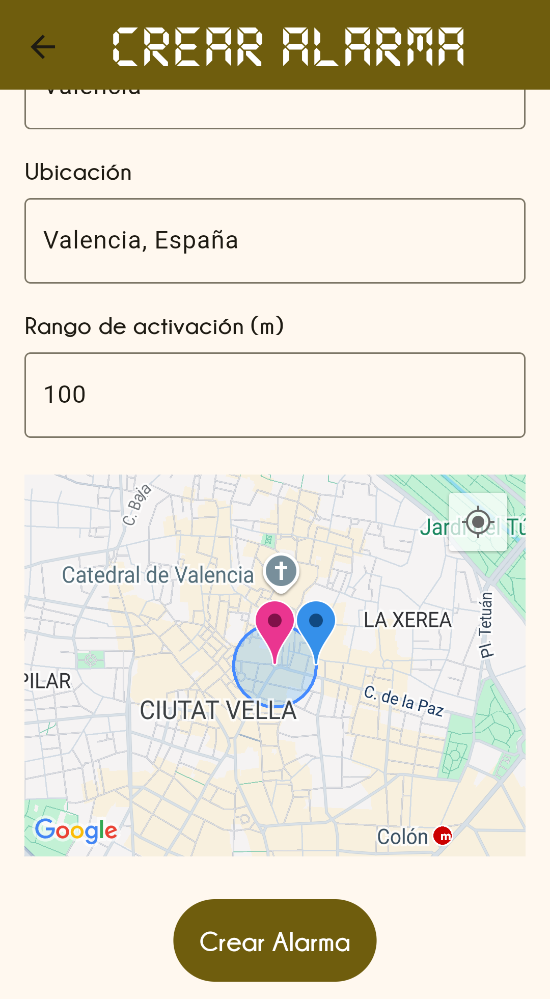

¿Cansado de alarmas que no se adaptan a tu día?
La tecnología de WakeMap cambia la forma en que recibes alarmas. Estas son sus principales ventajas:

Alarmas basadas en ubicación
Despierta o recibe avisos solo cuando llegues a la zona que tú eliges, sin importar la hora.

Rango de activación personalizable
Define la distancia exacta en la que quieres que se active la alarma para ajustarla a tus necesidades.

Alta precisión
WakeMap utiliza tecnología avanzada para detectar tu ubicación con exactitud y activar las alarmas en el momento correcto.
¿Cómo funciona WakeMap?
1. Marca tus zonas
Define el lugar donde quieres que la alarma se active.
2. Ajusta tus alarmas
Elige el rango de activación para tu alarma.
3. Deja que WakeMap haga el resto
La app detecta tu ubicación y gestiona las alarmas automáticamente.

¡Falta poco para WakeMap!
Estamos preparando todo para lanzarla. Mientras tanto, mira cuánto falta:
Preguntas frecuentes
¿En qué dispositivos funciona WakeMap?
Actualmente está disponible solo para Android, pero pronto lanzaremos para iOS.
¿Necesito conexión a internet para que funcione?
WakeMap utiliza GPS para activar las alarmas, por lo que la conexión no es estrictamente necesaria, pero sí recomendable para mejorar precisión.
¿Es gratis usar la app?
WakeMap tendrá una versión básica gratuita y opciones premium con funciones avanzadas.
Pre-regístrate para WakeMap
La app está en desarrollo. Regístrate para ser uno de los primeros en probarla cuando esté lista.